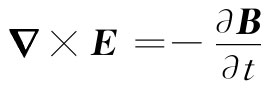
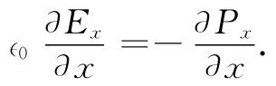

迄今我们已描述了三种波，现在的问题是要用入射波的各参数算出反射波和透射波的各参数，我们怎样才能做到这一点呢？上述三个波都满足在均匀材料中的麦克斯韦方程组，但是在两种不同材料的边界处麦氏方程组也应该被满足。因此，现在就必须考察一下正好在 边界处发生的事情。我们将会发现，麦克斯韦方程组要求这三个波应以某种方式联系在一起。
作为我们意向的一个例子，电场E的y分量在边界两边一定要相同 。这是法拉第定律
 （33.19）
所要求的，同样也可以用下述方法看出。考虑一个横越边界的小矩形回路Γ，如图33-4所示。式（33.19）表明E绕Γ的线积分等于通过该回路的B通量的变化率：
现在设想该矩形十分狭窄，以致回路所包围的面积为无限小。如果B仍保持有限大（没有什么理由使它在边界上应该无限大），则通过该面积的通量为零，因此E的线积分就必然为零。若Ey1 和Ey2 为边界两边的场分量，又若矩形的长度为l，则得
Ey1 l-Ey2 l=0
或
Ey1 =Ey2 ， （33.20）
正如我们在上面说过的那样。这向我们提供了三个波的场之间的关系。
计算麦克斯韦方程组在边界处的结果这一步骤称为“确定边界条件”。一般总是这样做的：通过对诸如图33-4的那个小矩形Γ或对跨越在边界上的小高斯面做的论证来找出尽可能多的类似式（33.20）那样的式子。尽管那是一种非常完美的做法，但它给人们的印象是，对于每一不同的物理问题处理边界问题的方法都不相同。
图33-4 边界条件Ey2 =Ey1 是根据∮Γ E·ds=0获得的
例如，在一个越过边界的热流问题中，两边的温度是怎样联系起来的呢？噢，你可能争辩说，首先，从一边流进 边界的热流应该等于从另一边流出 边界的热流。由做出这样的物理论证以求得边界条件，通常是可能的，而且一般也很有用。然而，有时当你在处理某一问题时你可能只有某些方程式，而还未能立刻看出要采取什么样的物理论证。所以虽然我们目前感兴趣的只在于电磁问题，其中我们能够做出那些物理论证，但是仍想要给你们指出一种可用于任何一种问题的方法——一种直接从微分方程求出在边界上所发生的情况的普遍 方法。
从写出关于电介质的所有麦克斯韦方程开始——而这次很特别，将把一切分量都明显地写出：
现在这些方程必须在区域1（边界左侧）和区域2（边界右侧）中全都成立。我们已写出了在区域1与区域2中的解。最后，它们也应当在 边界内、即在我们称之为区域3中被满足。虽然人们往往把边界想象成明显不连续的区域，事实却并非如此。物理性质很迅速地变化，但并不是无限快的。在任何情况下，我们都可以想象在一个我们称之为区域3中的短距离内，折射率从区域1至区域2的过渡是非常快的，但还是连续 的。并且，任何像Px ，Ex 等场量在区域3中也将做相似的一种过渡。在这区域里，那些微分方程仍必须被满足，而根据这一区域中那些微分方程的结果我们就能获得所需的“边界条件”。
例如，假设有一个介乎真空（区域1）与玻璃（区域2）之间的边界。在真空里没有什么可极化的东西，因而P1 =0。假定在玻璃中有某种极化强度P2 ，真空与玻璃之间有一个光滑而迅速的过渡。如果我们考察P的任一分量，比方说Px ，则它也许会如图33-5（a）所示那样变化。现在假设取第一个方程式（33.21），它含有P的分量对于x，y和z的微商。对y和z的微商我们不感兴趣，在那些方向上不会发生什么特别事情。可是Px 的x微商在区域3中就将有某一很大值，因为Px 的斜率极大。微商∂Px /∂x在边界处将有一明显的尖峰，如图33-5（b）所示。如果我们设想将边界挤压成更薄的一层，则该尖峰便会升得更高。如果对于我们关心的波，边界的确很陡，则在区域3中∂Px /∂x的大小将大大高于从边界外的波内P的变化中可能得到的任何贡献——这样就可以忽略除了由于边界引起的以外的其他一切变化。
图33-5 处于区域1与区域2的两种不同材料之间的过渡区域3中的场
现在若在式（33.21）右边存在一个巨大的尖峰，则该方程怎么才能够被满足呢？除非在另一侧也有一个同样巨大的尖峰，在左边的某种东西一定也很大。唯一的选择物是∂Ex /∂x，因为其他随y和随z的变化都只不过是我们刚才所说的波中的小效应。因此，-∈0 （∂Ex /∂x）必然会如图33-5（c）所示的那样——刚好是∂Px /∂x的拷贝。我们有

如果把这一方程对x跨越区域3积分，则得出结论：
∈0 （Ex2 -Ex1 ）=-（Px2 -Px1 ）. （33.25）
换句话说，从区域1至区域2，∈0 Ex 的跃变必然等于-Px 的跃变。
可以将式（33.25）重新写成
∈0 Ex2 +Px2 =∈0 Ex1 +Px1 ， （33.26）
这说明在区域1和区域2中量（∈0 Ex +Px ）具有相等的值。人们说：越过边界面时量（∈0 Ex +Px ）是连续 的。这样，我们有了一个边界条件。
尽管我们列举了一个由于区域1是真空而其中P1 是零的情况，但很清楚，这相同的论证也适用于在这两个区域中的任两种材料，因而式（33.26）是普遍正确的。
现在仔细检查其余的麦克斯韦方程，并看看它们中的每一个会告诉我们什么。下一步我们将选取式（33.22a）。这其中并没有x微商，因而不会告诉我们任何东西（记住场本身 在边界处不会变得特别大，只有对于x的微商才可能变得如此巨大以致它们支配了方程）。其次，我们考察式（33.22b）。啊！这里有一个x微商！在左边有∂Ez /∂x，假定它是一个巨大微商。但请等一等！右侧并没有什么东西与它相配，因此Ez 在从区域1进至区域2时就不能 有任何跃变［若果真有跃变的话，就会在式（33.22b）的左边出现一个尖峰，但在右边则没有，那么该方程式就是错的了］。因此，我们有这么一个新的条件：
Ez2 =Ez1 . （33.27）
通过同样的论证，式（33.22c）给出
Ey2 =Ey1 . （33.28）
这最后的结果恰好就是根据线积分的论证而获得的式（33.20）。
我们继续讨论式（33.23）。唯一可能具有尖峰的项为∂Bx /∂x，但在该式右侧却没有什么与之相配，因而可以断定
Bx2 =Bx1 . （33.29）
面临麦克斯韦方程组的最后一个了！式（33.24a）不会给出什么，因为并没有x微商。式（33.24b）中有一个x微商，即-c2 ∂Bz /∂x，但仍旧没有什么与之相配。因而得
Bz2 =Bz1 . （33.30）
最后一个方程与此很相似，并将给出
By2 =By1 . （33.31）
后面三个方程为我们提供了B2 =B1 。然而，必须强调，只有当边界两侧的材料是非磁性材料——或宁可说，当我们可以忽略材料的任何磁效应——时才会获得这个结果。除了铁磁性材料之外，对于大多数材料来说往往是可做到的（我们将在以后某些章节中处理材料的磁性）。
表33-1 在电介质表面上的边界条件
上述计划已使我们获得关于在区域1与区域2之间场的六个关系式，已经将它们汇集在表33-1中。现在可以利用它们来匹配两个区域内的波。然而，还要强调，刚才所用到的那种概念在任何 这样的物理情况下都适用。例如你有一些微分方程，并想要求得方程跨越两区域之间（那里某种性质发生了改变）一个明显的边界的解，对于我们眼前的目标来说，可以利用关于在边界处通量与环流的那些论证轻易地推导出同样的方程（你或许想要看看能否按照那种办法来得到同样的结果）。但现在你已经看到，每当你遇到困难而又不明白关于在边界上发生的事情的物理方面的任何简易论证时，你们便会有一种行之有效的方法——可以只处理那些方程。